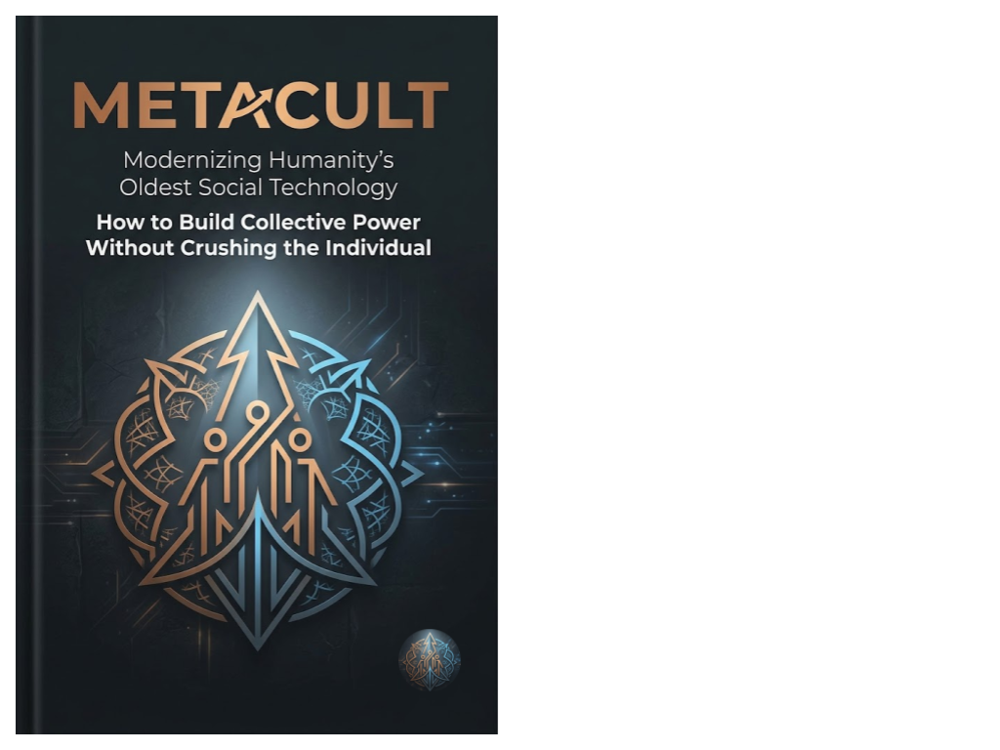

Outfinitist Philosophy · Axiologic Research Editions
Metacult
Modernizing Humanity’s Oldest Social Technology
How can people build collective power, shared meaning and durable institutions without crushing the individual who belongs to them?
112 pagesEnglish2026 edition
Collective power without capture
Metacult examines the oldest social technology: the culture that lets people coordinate around a shared name, story and purpose. Its question is how this power can be made answerable to those who live inside it.
It belongs to the Outfinitist project because collective life needs forms that can learn, admit dissent and remain open to revision.